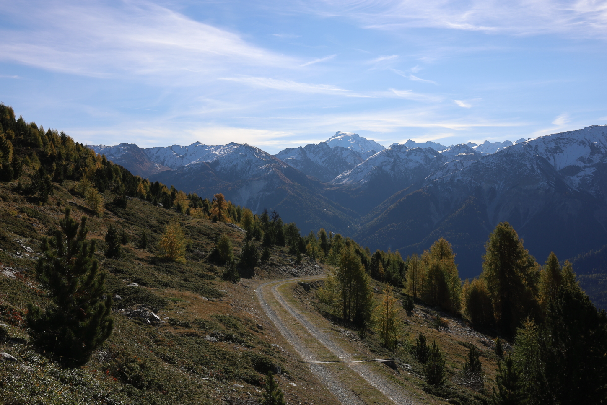
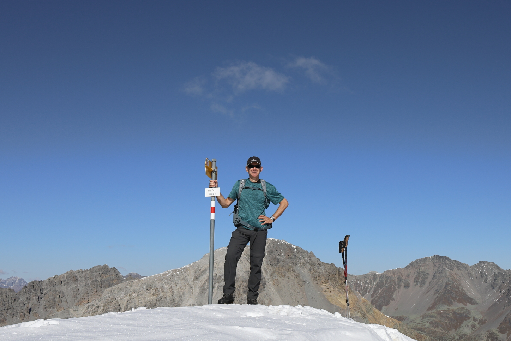
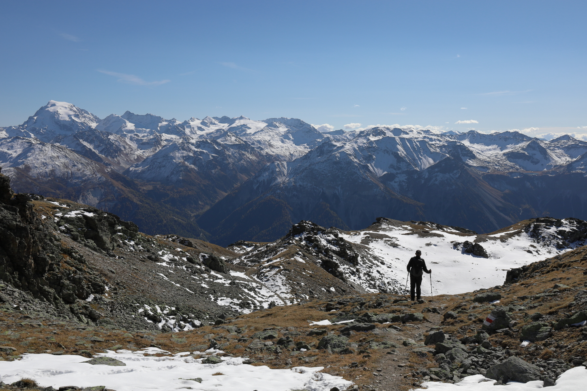

Piz Terza
October 16, 2021 by Pat and Bruno ‐ 5 min read
| Difficulty | T2 |
|---|---|
| ⇄ Distance | 15.9 km |
| ↑ Up | 940 m |
| ↓ Down | 940 m |
| Notable Locations | Lü (Val Müstair), Piz Terza |
| Public Transit Access? | Yes |

Arrival in Lü
We arrived in
The PostAuto departing from Lü.
Alp Tabladatsch
The first portion of the hike is along a gravel road through the forest — amazing views with the yellow larch trees all around. We were quite surprised by how few people were on the trail here despite it being a spot which is so accessible with public transit. It was also a weekend when we were here so we really lucked out with the lack of other hikers on the trail
The gravel road leading to the trailhead.
Pretty much the entire part up to the

A view towards the
The transition from dirt/gravel roads to a regular hiking path. This view is looking back towards the
Piz Terza
This portion of the hike follows a stream up to a small lake near the
The junction that leads up towards the
This part of the trail is quite a bit steeper than the previous parts, but is not at all exposed. The path is well marked and generally unproblematic to traverse apart from a few patches of ice and snow.
A view back towards the
Once we started hitting more frequent snow fields once we got above an elevation of around 2600m to 2700m. As mentioned though, this path is not at all exposed so these additional obstacles only resulted in the hiking times being a little longer than expected but did not otherwise impact the hike at all.
The final scent up to the top of the
Once at the top of the

Standing on top of the summit of the
The summit cross of the
We took a well deserved break at the summit, had some lunch, and enjoyed the views.
Not a bad lunch spot.
Fuorcla Sassalba
After a short rest, we made our way back down the same path which we had taken up to the summit. We followed this path all the way back to the small lake below the
 An incredible panorama view all the way down from the summit.
Once we had arrived at this small alpine lake, we made our way up to the upper (and slightly larger) lake on the
An unusual alpine lake that was just beginning to freeze over. The black rocks looked like they were covered with some kind of black algae which made them really stand out against the snow and the light grasses.
As expected, we encountered considerably more snow/ice while heading down the north side of the
A view back towards the
We followed this plain until we reached the
Back into the larches we go.
Return to Lü
The final portion of the hike back along the gravel road heading towards
 Larches all around.
Larches all around.
While a little on the longer side, this hike was absolutely beautiful and had the benefit of not being technically challenging. This is one I’d highly recommend doing if you’re in the area — especially if you’re here in the autumn.
A view of the